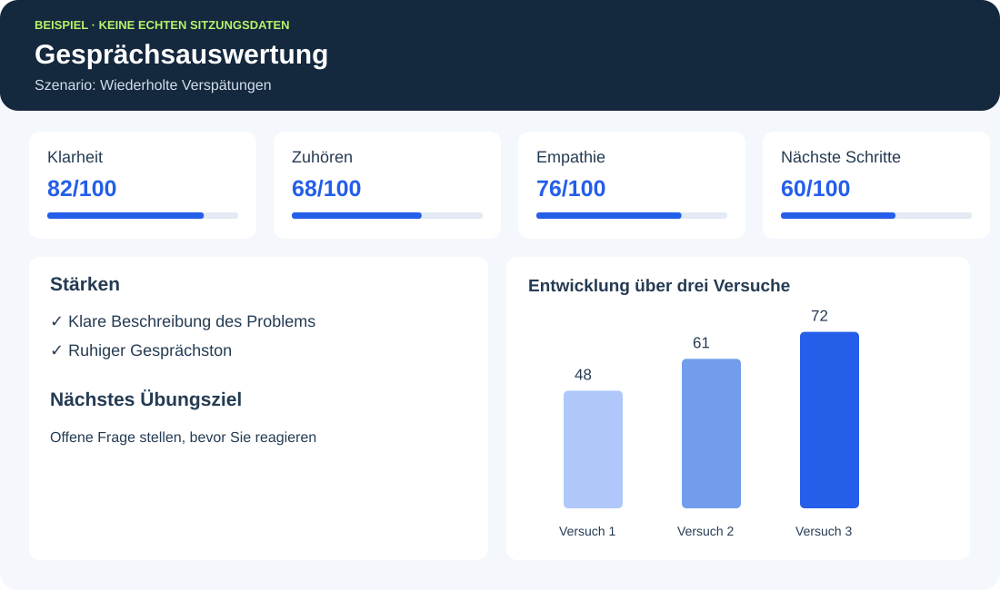

KI-Coaching, Rollenspiele und Gesprächsauswertung.
BEREITS UMGESETZT
Was ich entwickelt habe
Projekt zur Quantenphysikbildung — ein sprachbasierter KI-Tutor
Ich habe einen KI-Tutor entwickelt, mit dem Lernende mündlich interagieren können. Dafür integrierte ich Speech-to-Text- und Text-to-Speech-APIs, gestaltete eine freundliche, unterstützende Lehrpersönlichkeit und setzte einen Ablauf aus Antwort, personalisiertem Feedback und erneutem Versuch um.
Umgesetztes Projekt: Quantenphysikbildung — ein sprachbasierter KI-Tutor
Veröffentlichungen und Belege
Coban, A., Dzsotjan, D., Küchemann, S., Durst, J., Kuhn, J., & Hoyer, C. (2025). AI support meets AR visualization for Alice and Bob: personalized learning based on individual ChatGPT feedback in an AR quantum cryptography experiment for physics lab courses. EPJ Quantum Technology, 12, Article 15.
Wie sich diese Erfahrung auf Unternehmen übertragen lässt
Im Projekt nachgewiesen
Anwendung im betrieblichen Lernen
Mündliche Interaktion
Sprachbasierte Gespräche mit einem KI-Coach oder Übungspartner
Eine gezielt gestaltete Lehrpersönlichkeit
KI-Charaktere mit unterschiedlichen Rollen, Zielen und Reaktionsweisen
Feedback zur individuellen Antwort
Rollenspezifische Bewertung mit anschließendem erneutem Übungsversuch
Die Grundlage für Gesprächsinteraktion und Feedback habe ich bereits entwickelt. Durch Anpassung von Szenario, KI-Rolle und Bewertungskriterien kann ich darauf Coaching- und Rollenspielanwendungen für den Arbeitsalltag aufbauen.
ANWENDUNGEN, DIE ICH FÜR UNTERNEHMEN ENTWICKELN KANN
Was ich für Ihr Unternehmen entwickeln kann
01
KI-Coaching
Ein sprachbasierter Coach unterstützt Mitarbeitende dabei, schwierige Gespräche vorzubereiten, Entscheidungen zu reflektieren und nächste Schritte zu planen. Die Unterstützung lässt sich an Unternehmenspraktiken und Rollenerwartungen ausrichten.
02
Szenariobasierte Rollenspiele
Eine Sammlung von Übungsgesprächen mit KI-Charakteren: ein verärgerter Kunde, ein wiederholt verspäteter Mitarbeiter, eine neue Kollegin oder ein Käufer mit Einwänden. Jedes Szenario legt Kontext, Verhalten und angestrebtes Ergebnis fest.
03
Personalisiertes Feedback und Fortschritt
Ein Bericht nach jeder Sitzung zeigt Stärken, Fehler, verpasste Chancen und einen konkreten nächsten Schritt. Gesprächsaufzeichnungen und Bewertungsraster ermöglichen den Vergleich mehrerer Versuche und die Darstellung der Kompetenzentwicklung in einem Dashboard.
Anwendungsbeispiel
Eine Führungskraft übt ein Gespräch über wiederholte Verspätungen. Die KI übernimmt die Rolle eines defensiv reagierenden Mitarbeiters. Anschließend bewertet der Bericht Klarheit, Zuhören, Empathie und die Vereinbarung nächster Schritte. Die Führungskraft wiederholt das Gespräch mit einem konkreten Verbesserungsziel.
PRODUKTIDEE · ILLUSTRATIVE DARSTELLUNG
So könnte das Beispielgespräch aussehen und ausgewertet werden
Die folgende Darstellung führt das Beispiel mit der wiederholten Verspätung fort: Der Avatar übernimmt die Mitarbeiterrolle. Das Dashboard zeigt eine mögliche Auswertung desselben Übungsgesprächs.
BEISPIELROLLE: MITARBEITER
Üben Sie ein schwieriges Gespräch.
Die KI übernimmt die definierte Rolle und reagiert auf Ihre Antworten. Danach erhalten Sie Feedback zu den Kriterien des Szenarios.
„Ich sehe nicht, warum fünf Minuten ein Problem sind.“
Illustratives Avatar-Konzept. Keine aktive Gesprächsfunktion.

Beispiel-Dashboard mit fiktiven Werten. Zeigt mögliche Gesprächsbewertung, Feedback und Fortschritt.
Die Leistung im Szenario und die Verbesserung über mehrere Versuche messen. Wenn Daten aus dem Arbeitsalltag verfügbar sind, Zusammenhänge mit Kundenzufriedenheit oder Erstlösungsquote untersuchen.